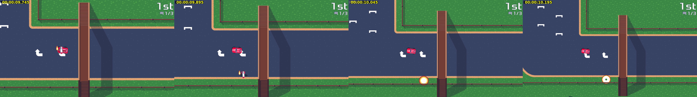

Eval: agateau__pixelwheels_362_mm
One dimension fails: Difficulty (dim 16). Option A needs exactly 1/4 with-image passes, and Attempt3 has 2/4 (kmxAhhn = 1.0 and zjP6gjU = 1.0). The 0/3 no-image side holds, but bsvd8bj reached 6/7 f2p from a code audit alone. Symptom Specificity (dim 4) scores 3 [Non-Fail - Image-carried Symptom], which is not a fail. The text names three kinds of element ('things that go along with a vehicle', 'shadows', 'the race view') and the kind of problem for each. It leaves the exact defects to in-clip comparisons ('the same kind of thing is drawn correctly elsewhere in the same clip'). There is one risk on dim 4: wewmugH saw the rocket drawn over the footbridge and left it alone as 'already behave[s] as the code intends'. That is 1 run in 4 on 1 defect in 6, the same ruling as the task108 Attempt4 review. The other 17 dimensions score 5. All 17 hashed files match the trial manifest, and lock 730124a6 is shared by Oracle (1.0), Nop (0.0) and all 4 with-image trials.
Scorecard
Every dimension in rubric order. Click a cell to see what is wrong (or the evidence, if it passed).
python -m py_compile tests/verifier.py succeeds. In the task image, ffprobe decodes the video as 1920x1080, 30/1 fps, 345 frames, 11.5 s. The extra environment/bugs/bug_01..05.patch files are injected-bug patches; the Dockerfile applies them and deletes them in the same RUN, which is allowed. README.md is also extra.COPY assets/recording.mp4 /app/.harbor_assets/). Leak check: no repo name, URL, file list or mechanism appears in instruction.md. The full mechanism is in task.toml difficulty_explanation, but task.toml is in the trial manifest's blind list (tests/, solution/, task.toml). The no-image trajectories show /app/.harbor_assets empty (step 3 of each run: total 8, only . and ..).recording.mp4 and /app/.harbor_assets/recording.mp4. Dockerfile: COPY assets/recording.mp4 /app/.harbor_assets/. In the pw109:task image, the copy of the asset is identical (cmp) to the bundle's.git apply --check -R for each), git apply --check /task/solution/fix.patch prints FIX_APPLY_CHECK=OK. The bundle's bug patches, fix.patch and test.patch are byte-identical to task109/recording_kit/. The CB Oracle log shows '== captured submission.patch (8587 bytes, 8 files) ==' and reward 1.0.diff --git paths in fix.patch equal files_edited exactly (set compare = True): ZLevel.java, bonus/Missile.java, racer/VehicleRenderer.java, racescreen/GameRenderer.java, racescreen/Helicopter.java, racescreen/RacerCameraUpdater.java, racescreen/debug/DropLocationDebugObject.java, utils/BodyRegionDrawer.java. All are under core/src. There is no test, doc, lockfile or changeset path.--tests Class.method and runs only those../gradlew --offline and installs nothing at test time, since every jar was pre-warmed in the image. Repeat consistency: the CB Oracle and the 2 passing trials give identical 9/9 JUnit, and Nop and the 5 failing runs fail only the expected f2p.Delivery gate
Process checks run locally or read from the submitted runs. Each failure is scored under the dimension it belongs to, not as an extra dimension.
Trials
3 no-image runs (pass@3, all must fail) and 4 with-image runs (pass@4, exactly 1 must pass). Rewards come from each run's verifier/reward.txt.
| Trial | Mode | Reward | f2p | p2p | Min | Failed tests |
|---|---|---|---|---|---|---|
task_without_images__BprBxg5 | no-image | 0.0 | 4/7 | 2/2 | 3.0 | carriedRocketPointsWhereTheCarPoints firedRocketFliesWhereTheCarPoints missileIsDrawnBeforeForegroundLayer |
task_without_images__YJFLY6g | no-image | 0.0 | 4/7 | 2/2 | 4.1 | carriedRocketPointsWhereTheCarPoints firedRocketFliesWhereTheCarPoints missileIsDrawnBeforeForegroundLayer |
task_without_images__bsvd8bj | no-image | 0.0 | 6/7 | 2/2 | 3.3 | missileIsDrawnBeforeForegroundLayer |
task_with_images__6J9RSwh | with-image | 0.0 | 6/7 | 2/2 | 4.2 | rocketExhaustComesOutOfItsTail |
task_with_images__kmxAhhn | with-image | 1.0 | 7/7 | 2/2 | 4.5 | — |
task_with_images__wewmugH | with-image | 0.0 | 6/7 | 2/2 | 4.3 | missileIsDrawnBeforeForegroundLayer |
task_with_images__zjP6gjU | with-image | 1.0 | 7/7 | 2/2 | 3.8 | — |
Issues & suggested fixes
Hardening – Difficulty (Model Trial Fails) 2 · [Fail - Trial Threshold Not Met]
What is wrong. With-image pass@4 = 2/4. Option A needs exactly 1/4, so this is a fail. Both failures were single-defect misses, so the with-image pass rate is about 50%. The no-image side is close too: bsvd8bj fixed 5 of 6 defects without the video.
Suggested fix. Lower the with-image pass rate without touching the 0/3 no-image side, then re-run all 7 trials (or 11 for Option B). Option B (3 + 8, 1-2 passes allowed) is more tolerant, but at a ~50% pass rate it lands 1-2/8 only about 14% of the time, so hardening comes first. Ideas that keep the no-object, no-symptom wording: make a defect harder to spot only by eye, e.g. shorten the exhaust moment or shoot the bridge pass with less zoom; drop the 'the same kind of thing is drawn correctly elsewhere' pointer (but that weakens dim 4); or add a seventh perception-only defect. Re-check dim 4 after any instruction change.
Instruction – Symptom Specificity 3 · [Non-Fail - Image-carried Symptom]
What is wrong. Not a fail. Flag for feedback: [Non-Fail - Image-carried Symptom]. The text gives only the kind of each problem, and the exact defects live in the clip's in-clip comparisons. RISK, not scored as a fail: the rubric's third fail reason ('the with-image trials show agents could not tell the bug from intended behavior') can be cited for wewmugH, which explicitly ruled the rocket-over-bridge defect 'intended'. That is 1 run in 4 on 1 defect in 6. It is short of the 3/4 example in the QC prompt, and matches how the task108 Attempt4 review treated a 1-in-4 case, so it is not scored as a fail. A strict reviewer could still score dim 4 as 2 on this, or argue that 'things that go along with a vehicle' does not name the element by type. Minor wording issues: 'the vehicles' movement ... are correct and should keep looking the way it does now' (should be 'they do'). 'don't match what casts them' does not really describe the car-shadow defect (wrong side vs. the other shadows).
Suggested fix. Optional, and only if you also deal with Difficulty. A safe tightening that names no object, symptom or timestamp is to add one or two indirect expected-behavior rules. For example: 'whatever passes under an overhead obstacle is hidden by it, together with everything that moves along with it' (this directly answers wewmugH's 'behaves as intended' reading), and 'every shadow falls the same way and has the shape and direction of what casts it'. Warning: more text clarity usually raises the with-image pass rate, which is already too high (2/4). Changing instruction.md changes the task checksum, so all 7 trials must be re-run.
Dimension details
1. Structure – Task Bundle Files 5 · Pass
| Evidence | Attempt3/Tasks/agateau__pixelwheels_362_mm has all 11 fixed harness files, and none is empty: task.toml 5988 B, instruction.md 891 B, evidence_bundle.json 1859 B, environment/Dockerfile 3063 B, environment/assets/ASSET_MANIFEST.json 605 B, solution/fix.patch 8587 B, solution/solve.sh 349 B, tests/config.json 1450 B, tests/test.patch 59246 B, tests/test.sh 11141 B, tests/verifier.py 8482 B. There is also one asset, recording.mp4 (4717379 B). All three JSON files parse (python json.load), and python -m py_compile tests/verifier.py succeeds. In the task image, ffprobe decodes the video as 1920x1080, 30/1 fps, 345 frames, 11.5 s. The extra environment/bugs/bug_01..05.patch files are injected-bug patches; the Dockerfile applies them and deletes them in the same RUN, which is allowed. README.md is also extra. |
|---|---|
| What is wrong | Nothing found. |
| Suggested fix | None. |
2. Structure – Deliverables & Packaging 5 · Pass
| Evidence | Attempt3 has sibling Tasks/ and Trials/ roots. Trials/ holds without_images (3 runs: BprBxg5, YJFLY6g, bsvd8bj) and with_images (4 runs: 6J9RSwh, kmxAhhn, wewmugH, zjP6gjU). That is 7 trials, the Option A count. Oracle/, Nop/, Check/ and Analyze/ are present too. |
|---|---|
| What is wrong | Nothing found. The folders are already extracted here, so they still have to be shipped as Tasks.tar.gz and Trials.tar.gz (top-level folders Tasks/ and Trials/). |
| Suggested fix | When you submit, tar each root on its own (tar czf Tasks.tar.gz Tasks; tar czf Trials.tar.gz Trials). |
3. Instruction – Requires Visual Evidence 5 · Pass
| Evidence | Read without the video, instruction.md gives only three kinds of problem: 'things that go along with a vehicle are drawn or hidden wrongly compared with that vehicle', 'some shadows don't match what casts them' and 'the race view doesn't follow the action the way it should'. It names no object, timestamp or expected rule. The trials confirm the video is needed: all 3 no-image runs missed missileIsDrawnBeforeForegroundLayer (upstream #362, the rocket over the footbridge), and 2 of 3 missed both rocket-orientation f2p. The video path resolves to /app/.harbor_assets/recording.mp4 (Dockerfile COPY assets/recording.mp4 /app/.harbor_assets/). Leak check: no repo name, URL, file list or mechanism appears in instruction.md. The full mechanism is in task.toml difficulty_explanation, but task.toml is in the trial manifest's blind list (tests/, solution/, task.toml). The no-image trajectories show /app/.harbor_assets empty (step 3 of each run: total 8, only . and ..). |
|---|---|
| What is wrong | Nothing found. Non-graded: bsvd8bj (no image) still reached 6/7 f2p. It found the shadow-angle, car-shadow, exhaust-axis, camera and rocket-angle bugs by code audit alone, so only the z-order defect really depends on the video. The task.toml line 'Without the video the instruction gives no symptom to search for' overstates how much the video is needed. |
| Suggested fix | None required. Consider softening that difficulty_explanation sentence: five of the six injected defects can be found from the code. |
4. Instruction – Symptom Specificity 3 · Non-Fail
[Non-Fail - Image-carried Symptom]
| Evidence | TABLE (element | defect: text or image? | expected: text or image? | comparison pointed to | clue left to image | described correctly?) 1. 'things that go along with a vehicle' (rocket + its exhaust) | text: 'drawn or hidden wrongly compared with that vehicle' (kind only); exact defect only in the image: drawn over the footbridge at 9.25-9.33 s while the car is hidden, crosswise on the car 0-1.5 s, fired across the car's heading into the fence at 9.9 s, flame out of the side at 9.9 s | image: 'the same kind of thing is drawn correctly elsewhere in the same clip' (car hidden by the bridge; car's boost flame from its back at 6.6-7.0 s) | in-clip comparison | which object, when, how | yes, verified on sheet_2, sheet_4b and sheet_5. 2. 'some shadows' | text: 'don't match what casts them' | image (other shadows in the clip) | in-clip comparison | which shadow; rocket shadow flat at 9.33 s; car shadow up-left in the countdown | mostly: right for the rocket shadow. For the car shadow (shape fine, wrong side vs. every other shadow) 'don't match what casts them' is loose; 'don't fall like the others' would be accurate. Not false. 3. 'the race view' | text: 'doesn't follow the action the way it should' (kind only) | image (north/south stretches vs. east/west straights, e.g. 8 s: car at the left edge heading west) | in-clip comparison | which stretches, which direction | yes. All three checks: (1) Each element is named as a class ('things that go along with a vehicle', 'shadows', 'race view'), with no fix hint. (2) Every general phrase comes with context right away (compared with that vehicle / with what casts them / follow the action), plus the pointer 'the same kind of thing is drawn correctly elsewhere in the same clip'. (3) The clues (which instance, when, how big) stay in the clip. The text gives only the kind of each defect. The exact defect and the expected result are carried by in-clip comparisons, which is the [Non-Fail - Image-carried Symptom] pattern, not a 5. TRAJECTORIES (all 4 with-image runs read): kmxAhhn and zjP6gjU named all six symptoms. kmxAhhn wrongly said the exhaust 'isn't visible in the recording because the missile is never fired' (it is fired at 9.9 s, sheet_5), but fixed it from the code anyway. 6J9RSwh found 5 of 6 and never mentions the exhaust (a perception miss, not a misreading). wewmugH's final message says: 'I left two things alone because they already behave as the code intends: the car is hidden under the bridge, and the missile with its shadow is drawn above it.' That is the upstream #362 defect taken for intended behavior. It is wewmugH's only failed f2p (missileIsDrawnBeforeForegroundLayer). |
|---|---|
| What is wrong | Not a fail. Flag for feedback: [Non-Fail - Image-carried Symptom]. The text gives only the kind of each problem, and the exact defects live in the clip's in-clip comparisons. RISK, not scored as a fail: the rubric's third fail reason ('the with-image trials show agents could not tell the bug from intended behavior') can be cited for wewmugH, which explicitly ruled the rocket-over-bridge defect 'intended'. That is 1 run in 4 on 1 defect in 6. It is short of the 3/4 example in the QC prompt, and matches how the task108 Attempt4 review treated a 1-in-4 case, so it is not scored as a fail. A strict reviewer could still score dim 4 as 2 on this, or argue that 'things that go along with a vehicle' does not name the element by type. Minor wording issues: 'the vehicles' movement ... are correct and should keep looking the way it does now' (should be 'they do'). 'don't match what casts them' does not really describe the car-shadow defect (wrong side vs. the other shadows). |
| Suggested fix | Optional, and only if you also deal with Difficulty. A safe tightening that names no object, symptom or timestamp is to add one or two indirect expected-behavior rules. For example: 'whatever passes under an overhead obstacle is hidden by it, together with everything that moves along with it' (this directly answers wewmugH's 'behaves as intended' reading), and 'every shadow falls the same way and has the shape and direction of what casts it'. Warning: more text clarity usually raises the with-image pass rate, which is already too high (2/4). Changing instruction.md changes the task checksum, so all 7 trials must be re-run. |
5. Instruction – Task Type 5 · Pass
| Evidence | task_type = temporal_interaction: 'Fix a defect that only appears across a sequence of interactions / state transitions'. The defects the text describes show up across transitions in the clip. The rocket shows over the footbridge only while the car passes under it (9.25-9.33 s). The fired rocket's path and exhaust appear only after firing (9.9-10.2 s). The look-ahead error depends on the heading as the lap goes on (east/west vs. north/south stretches). The text calls them drawing, hiding, shadow and view problems in a recorded race, which fits the type. |
|---|---|
| What is wrong | Nothing found. Two of the six (the crosswise rocket and the car shadow) are visible in a single frame. That is fine, since the task as a whole needs the sequence. |
| Suggested fix | None. |
6. Image – Evidence Quality 5 · Pass
| Evidence | NAMING TABLE (file | role | what the frames show | what name/role/text claim | true? | agents confused?): recording.mp4 | bug_video | base (bugs injected) behavior. Countdown 0-1.2 s: rocket crosswise on a north-facing car, car shadow up-left (sheet_2). 9.18-9.40 s: car under the footbridge, hidden at 9.33 s, while the rocket and a flat, horizontal rocket shadow are drawn over the bridge (sheet_4b). 9.75-10.2 s: rocket fired, points south into the fence while the car heads west, flame on its side, explodes at the fence at 10.05 s (sheet_5). 6.6-7.0 s: the car's own boost flame out of its back (sheet_3). 8 s: car at the left edge heading west, road behind it on screen (sheet_1) | neutral name; role 'bug_video'; descriptions in ASSET_MANIFEST/evidence_bundle (countdown, lap, footbridge 9.3-9.5 s, fired at 9.9-10.2 s, explosion at the fence) | true (every listed moment checked on the contact sheets) | no: no run treated the video as a reference. F2P vs ASSET (steps 1-4): missileIsDrawnBeforeForegroundLayer ↔ rocket over the bridge (sheet_4b). Fixing only that (the attached rocket drawn at the car's own level, as kmxAhhn and zjP6gjU did) passes the f2p. carriedRocketPointsWhereTheCarPoints ↔ crosswise rocket (sheet_2). firedRocketFliesWhereTheCarPoints ↔ rocket flying south into the fence (sheet_5). rocketExhaustComesOutOfItsTail ↔ side flame (sheet_5). rocketShadowHasTheRocketsOrientation ↔ flat rocket shadow (sheet_4b 9.33 s); the crate shadows also turn wrong (all 4 with-image agents used them). vehicleShadowFallsLikeEveryOtherShadow ↔ car shadow up-left (sheet_2). viewLooksAheadOfTheCarWhicheverWayItHeads ↔ road behind on the east/west straights (sheet_1 8 s). Each f2p's scenario (several headings, carried/fired, a foreground tile above) contains the state the clip shows. STEP 7 (injected defects, bugs 01-05): a fix that skips any of them leaves a defect visible in the clip, so it is incomplete, not a valid alternative. The upstream #362 issue (rocket over the footbridge) is what the clip shows. |
|---|---|
| What is wrong | Nothing found. |
| Suggested fix | None. |
7. Metadata – task_type 5 · Pass
| Evidence | task_type = "temporal_interaction" is one of the seven values and fits a video whose defects appear across state transitions (see dim 5). |
|---|---|
| What is wrong | Nothing found. Non-graded: Guidelines Step IV says tags should include the task_type. tags has "visual_bug_fix" and not "temporal_interaction". |
| Suggested fix | Optional: replace "visual_bug_fix" with "temporal_interaction" in tags (this changes the checksum, so batch it with any other edit). |
8. Evidence – Chain Consistency 5 · Pass
| Evidence | On disk: environment/assets/recording.mp4, 4717379 B, sha256 976eac49...ce179. ASSET_MANIFEST.json: file recording.mp4, container_path /app/.harbor_assets/recording.mp4, bytes 4717379, sha256 976eac49...ce179 (matches). evidence_bundle.json: file recording.mp4, local_path /app/.harbor_assets/recording.mp4, same bytes and sha256. instruction.md: recording.mp4 and /app/.harbor_assets/recording.mp4. Dockerfile: COPY assets/recording.mp4 /app/.harbor_assets/. In the pw109:task image, the copy of the asset is identical (cmp) to the bundle's. |
|---|---|
| What is wrong | Nothing found. |
| Suggested fix | None. |
9. Golden Fix – Applies Cleanly 5 · Pass
| Evidence | Inside the pw109:task image (HEAD tag harbor_base; bug_01..05 confirmed present with git apply --check -R for each), git apply --check /task/solution/fix.patch prints FIX_APPLY_CHECK=OK. The bundle's bug patches, fix.patch and test.patch are byte-identical to task109/recording_kit/. The CB Oracle log shows '== captured submission.patch (8587 bytes, 8 files) ==' and reward 1.0. |
|---|---|
| What is wrong | Nothing found. |
| Suggested fix | None. |
10. Golden Fix – Source-Only Scope 5 · Pass
| Evidence | The 8 diff --git paths in fix.patch equal files_edited exactly (set compare = True): ZLevel.java, bonus/Missile.java, racer/VehicleRenderer.java, racescreen/GameRenderer.java, racescreen/Helicopter.java, racescreen/RacerCameraUpdater.java, racescreen/debug/DropLocationDebugObject.java, utils/BodyRegionDrawer.java. All are under core/src. There is no test, doc, lockfile or changeset path. |
|---|---|
| What is wrong | Nothing found. |
| Suggested fix | None. |
11. Tests – Implementation Overfit 5 · Pass
| Evidence | Every assertion is behavioral: recorded draw order and quad geometry from a DrawRecorder batch, Box2D positions, and the camera offset. None is a string or enum. Tolerances: rocket nose / travel vs. heading < 5° over headings {30,90,135,200,290}; shadow vs. rocket < 2° and centre within 0.5 × the rocket width; exhaust centre along the axis < -0.45 × length and aside < 0.15 × length; car shadow offset x > 0.05, y < -0.05, |offset| < 1 at headings {0,90,200,315}; camera offset |o| > 1 and within 5° of the heading at 8 headings; z-order: every rocket quad index < the first foreground quad index. EQUIVALENCE TABLE (alternative | correct & in repo context? | test accepts? | evidence): (1) z-order by the golden ZLevel split (FLYING_LOW/FLYING_HIGH/FG_LAYERS) | yes | yes | Oracle. (2) attached rocket drawn at the vehicle's own ZLevel, fired rocket on top | yes, plausible (reuses the vehicle's level) | yes | kmxAhhn and zjP6gjU passed 7/7. (3) rockets at OBSTACLES | yes | CB reports yes (recording_kit/altfix.patch; not re-run here). (4) everything flying drawn under the foreground | no: puts the rescue helicopter under the bridge, against 'keep looking the way it does' | rejected by the p2p helicopter guard (correctly). (5) rocket angle from vehicle.getAngle()*degRad (golden) / straight from body.getAngle() / referenceAngle = 0 | yes | yes | wewmugH used the body angle and passed both rocket-orientation f2p. (6) exhaust by cos/sin (golden) or Vector2(refH,0).rotateRad | yes, same vector | yes | zjP6gjU, kmxAhhn and bsvd8bj passed. (7) shadow angle radDeg in BodyRegionDrawer, with or without the extra scale fix | yes | yes | all 4 with-image runs added scale handling and passed. (8) car shadow sign flip, any small down-right offset | yes | yes. (9) look-ahead as (advance,0).rotate(angle), or (0,advance).rotate(angle-90) | yes, same vector | yes; all 4 with-image runs also reordered the camera speed clamp and still passed (IMMEDIATE update). No rejected correct alternative was found, and no output-form issue (the values are angles and positions with tolerances). |
|---|---|
| What is wrong | Nothing found. |
| Suggested fix | None. |
12. Tests – f2p/p2p Identifier Validity 5 · Pass
| Evidence | The task.toml f2p/p2p lists equal tests/config.json exactly (python compare = True for both). Each of the 9 IDs ('Class method') matches exactly one testcase in the Oracle JUnit (count = 1 for each). test.sh turns each ID into --tests Class.method and runs only those. |
|---|---|
| What is wrong | Nothing found. Non-graded: test.patch also adds MissileZOrderTest.liftedVehicleIsDrawnAfterForegroundLayer, which is in neither list, so it never runs. |
| Suggested fix | Optional: add liftedVehicleIsDrawnAfterForegroundLayer to p2p after checking it passes on nop and oracle (it guards the carried-vehicle path the golden moves to FLYING_HIGH), or remove it from test.patch. |
13. Tests – p2p Classification 5 · Pass
| Evidence | In the CB Nop JUnit (base), helicopterIsDrawnAfterForegroundLayer and viewKeepsTheCarOnScreen both pass (p2p 2/2). In the CB Oracle JUnit both pass. They also pass in all 7 trials. |
|---|---|
| What is wrong | Nothing found. |
| Suggested fix | None. |
14. Tests – Discriminating (f2p) 5 · Pass
| Evidence | In the CB Nop JUnit, all 7 f2p fail (rocketShadowHasTheRocketsOrientation, rocketExhaustComesOutOfItsTail, carriedRocketPointsWhereTheCarPoints, firedRocketFliesWhereTheCarPoints, vehicleShadowFallsLikeEveryOtherShadow, missileIsDrawnBeforeForegroundLayer, viewLooksAheadOfTheCarWhicheverWayItHeads). In the CB Oracle JUnit all 7 pass. Each f2p maps to one injected or upstream defect. |
|---|---|
| What is wrong | Nothing found. |
| Suggested fix | None. |
15. Tests – Determinism 5 · Pass
| Evidence | Box2D steps at a fixed BOX2D_TIME_STEP, and missile.act() uses the same fixed step, so the flame animation time is deterministic. Textures are Mockito mocks, so no fonts or image loading are involved. The GL tests run in a hidden software-GL context (Xvfb) with a 60 s timeout. Nothing uses the network or wall-clock time. test.sh runs ./gradlew --offline and installs nothing at test time, since every jar was pre-warmed in the image. Repeat consistency: the CB Oracle and the 2 passing trials give identical 9/9 JUnit, and Nop and the 5 failing runs fail only the expected f2p. |
|---|---|
| What is wrong | Nothing found. I did not do a local oracle re-run (see gates). [verifier] network_mode = "public" is more than the offline run needs, but it is harmless. |
| Suggested fix | Optional: set [verifier] network_mode = "no-network", since test.sh is fully offline. |
16. Hardening – Difficulty (Model Trial Fails) 2 · Fail
[Fail - Trial Threshold Not Met]
| Evidence | Option A count (7 trials). No-image 0/3: BprBxg5 0.0 (f2p 4/7), YJFLY6g 0.0 (4/7), bsvd8bj 0.0 (6/7), with /app/.harbor_assets confirmed empty in each trajectory. With-image 2/4: 6J9RSwh 0.0 (6/7, missed the exhaust), kmxAhhn 1.0 (7/7), wewmugH 0.0 (6/7, took the rocket over the bridge as intended), zjP6gjU 1.0 (7/7). Option A needs exactly 1/4 with-image. Option B needs 11 trials. Run times are 3.0-4.5 min per trial (informational). |
|---|---|
| What is wrong | With-image pass@4 = 2/4. Option A needs exactly 1/4, so this is a fail. Both failures were single-defect misses, so the with-image pass rate is about 50%. The no-image side is close too: bsvd8bj fixed 5 of 6 defects without the video. |
| Suggested fix | Lower the with-image pass rate without touching the 0/3 no-image side, then re-run all 7 trials (or 11 for Option B). Option B (3 + 8, 1-2 passes allowed) is more tolerant, but at a ~50% pass rate it lands 1-2/8 only about 14% of the time, so hardening comes first. Ideas that keep the no-object, no-symptom wording: make a defect harder to spot only by eye, e.g. shorten the exhaust moment or shoot the bridge pass with less zoom; drop the 'the same kind of thing is drawn correctly elsewhere' pointer (but that weakens dim 4); or add a seventh perception-only defect. Re-check dim 4 after any instruction change. |
17. Hardening – Real & Feasible 5 · Pass
| Evidence | Defect 1 is upstream issue #362 (PR #373): the carried rocket is drawn over foreground map elements. Bugs 01-05 are plausible developer mistakes: a degrees/radians mix-up hidden behind normalizeAnglePiRad, a joint reference angle that keeps the wrong offset, a sprite axis swap for the exhaust, a radians-for-degrees mix-up in BodyRegionDrawer, a sign flip in the car shadow offset, and a +Y look-ahead rotated by (90 - heading). Each fix is a one- or two-line correction a real developer would write. The z-order fix is the upstream restructure, and simpler valid fixes also pass. Feasible: 2/4 with-image runs solved all six. |
|---|---|
| What is wrong | Nothing found. |
| Suggested fix | None. |
18. Gate – Oracle/Nop 5 · Pass
| Evidence | CB Oracle (RSpNuQQ): stage banners '== captured submission.patch (8587 bytes, 8 files) ==', '== applying test.patch ==', '== running f2p + p2p tests ==', '== computing reward ==', then reward=1.0 (f2p 7/7, p2p 2/2, 0.6 min). CB Nop (QcpaZpD): same banners, captured 0 bytes, reward=0.0 (f2p 0/7, p2p 2/2, 0.6 min). Neither shows 'could not apply test.patch'. Both result.json have task_checksum 730124a6..., the same as the 4 with-image trials. The current files match all 17 sha256 entries in Trials/with_images/task_manifest.json. |
|---|---|
| What is wrong | Nothing found. I did not run oracle, nop or a re-run locally, following your standing rule that you run harbor and oracle/nop yourself. This score relies on the CB runs, which are on the same checksum. |
| Suggested fix | None. |
19. Unauditable 5 · Pass
| Evidence | The submission is complete and auditable: bundle, 7 trials with trajectories, Oracle, Nop, Check and Analyze. |
|---|---|
| What is wrong | Nothing found. |
| Suggested fix | None. |
Visual evidence


